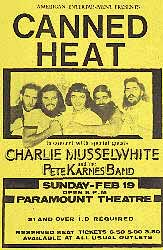
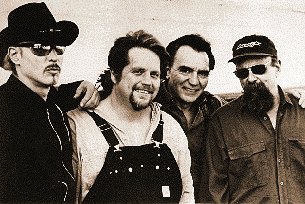
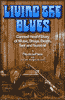

- ATB's Who's Who -
- ATB's Who's Who -
Состав на записи первого альбома: Боб ХАЙТ (Bob (Robert) Hite), вокал, гармоника (26 февраля 1945, Торрэнс, Калифорния - 5 апреля 1981, Венеция, Калифорния); Алан Уилсон (Alan Wilson), вокал, гармоника, гитара (4 июля 1943, Бостон, Массачуссетс - 3 сентября 1970, Торрэнс, Калифорния); Хенри Вестайн (Henry Vestine), гитара (24 декабря 1944, Вашингтон - 21 октября 1997, Париж, Франция), Ларри Тэйлор (Larry Taylor) (26 июня 1942, Бруклин), бас; Фрэнк Кук (Frank Cook), ударные (?). У истоков группы стояли Боб Хайт, по прозвищу "Bear"-"Медведь", и Элан Уилсон, по прозвищу "Blind Owl"-"Слепой сыч": два молодых знатока довоенного блюза и фанатичных коллекционера старых блюзовых пластинок на 78 об/мин. В 1965г. они попытались воскресить форму примитивного акустического ансамбля танцевальной музыки: джаг-бэнд. Попробовав, поняли, что без электричества в 60-х не обойтись, и в своем следующем проекте подкрасили старинные блюзовые рецепты современными техническими возможностями. "Кэннд Хит"- "Консервированная жара" - популярное в выражение со множеством значений: от острого соуса до зажигательной смеси. Но группа взяла свое название из блюза, записанного в 1928г. дельта-блюзмэном Томми Джонсоном (Tommy Johnson), посвященном продукту под тем же названием, выпускавшемся для прочистки водопроводных труб. В годы сухого закона это средство получило особую популярность у токсикоманов Дельты. Мистика названия имела свое разрушительное действие на основателей группы. У Уилсона было высшее музыкальное образование, гитарист Генри Вестайн пришел из группы Фрэнка Заппы (Frank Zappa) "Mothers Of Invention" ("Матери изобретений"), известной мудреными музыкальными экспериментами, а барабанщик Фрэнк Кук прежде аккомпанировал джазовым звездам калибра Чета Бейкера (Сhet Baker). Но в записях "Кэннд Хит" этот богатый музыкальный опыт и теоретическая подготовка скрыты, на поверхности - прямолинейные энергичные буги-вуги. Группа выдерживала исполнительскую манеру в рамках относительно простой музыкальной эстетики, чем шла против господствовавшего на рок-сцене конца 60-х поветрия музыкальных экспериментов. Ритм-секция группы всегда играла безупречно (особенно после прихода в конце 1967 мексиканского барабанщика Адольфо "Фито" де ла Парра (Adolfo "Fito" de la Parra, 8 февраля 1946, Мексико-сити, Мексика)). "Слепой сыч" пел отстраненным еле слышным высоким фальцетом, а "Медведь" рычал раскатисто и самоуверенно. Никто из солистов-инструменталистов не претендовал на признание в качестве виртуоза. Но общее звучание группы в высшей степени соответствовало таким основополагающим блюзовым критериям, как яркая индивидуальность музыкального языка и эмоциональная выразительность.  Дебютный альбом, состоявший из авторизированных обработок классических дельта-блюзов, был хорошо принят, а прорывом к общенациональной популярности стало выступление "Кэннд Хит" на легендарном в истории рок-музыки фестивале "Монтерей Поп-67"(Monterey Pop), где так же в одну ночь превратились в звезды Джимми Хендрикс, Дженис Джоплин и Отис Реддинг.Будучи музыкальной аномалией на поп-сцене, "Кэннд Хит" оставались в социальном отношении типичными представителями американской рок-сцены своего времени: антивоенным и отчасти анархическим пафосом были проникнуты их концертные выступления, а калифорнийский дом "Кэннд хит" превратился в открытую для всех хипповую коммуну. "Кэннд хит" оказались готовы не на словах, а на деле поделиться плодами своего коммерческого успеха, пришедшего со вторым альбомом. (Жизнь в "доме, наполненом блюзом", описывает Джон Мэйэлл (John Mayall) в песне "Медведь" из альбома "Blues From Laurel Canyon" - "Блюз Лаурельского каньона".) "Boogie With Canned Heat", вышедший в начале 1968г., вошел в первую двадцатку "горячих" альбомов США и в первую пятерку - Великобритании. Хитом стал сингл с песней " On the Road Again" ("Снова в дороге") из этого альбома. Эту песню можно считать архитипичной для творчества "Кэннд Хит": она представляет собой переработку старого кантри-блюза Джеймса Одена (James Oden) и исполнена "зыбким" голосом Уилсона на фоне бесконечно повторяющегося бугивужного рифа. Способность играть подобные рифы круг за кругом, не теряя необходимой энергичности, "Кэннд Хит" продемонстрировали в следующем двойном альбоме, где была представлена 44-минутная концертная версия исполнения "Refried Boogie" ("Пережаренные буги"). Последовавшие три года были временем расцвета группы. Выходят подряд несколько успешных и в творческом, и в коммерческом отношении альбомов, еще несколько синглов входят в хит-парад. Триумфом становится исполнение проникнутой "хипповым духом" песни "Going Up The Country" ("Уезжаю далеко в деревню") на фестивале в Вудстоке. (Накануне фестивального выступления Хенри Вестайна заменил чикагский гитарист Harvey Mandel (Харви Мандел) (11 марта 1945, Детройт)). "Кэннд Хит" обеспечивают контракт на запись с фирмой "Либерти"("Liberty") одному из своих кумиров - Алберту Коллинзу (Albert Collins); записывают великолепный двойной альбом с Джоном Ли Хукером (John Lee Hooker), который стал для изобретателя электробуги первым и до 1989г. оставался единственным его альбомом, вошедшим в список "горячих" журнала "Биллбоард". В альбоме "Memphis Heat" группа аккомпанирует певцу-пианисту Мемфису Слиму (Memphis Slim). Смерть Уилсона в 1970г. (от случайной или подстроенной передозировки наркотиком) знаменовала конец эпохи "молодого рока". Сингл из вышедшего после смерти Уилсона альбома "Future Blues" ("Тоска по будущему") с песней Уилберта Харрисона (Wilbert Harrison) "Let's Work Together"- "Давайте поработаем вместе" - был последним хитом в истории группы и последним гимном культуры "хиппи". В 70-х состав "Кэннд Хит" теряет стабильность. Мандэл и Тэйлор уходят из группы, чтобы работать с Джоном Мэйэллом. Возвращается в группу Вестайн. Вторым вокалистом вместо Уилсона приходит Джо Скотт Хилл (Joe Scott Hill). Альбом "New Age" ("Новый век") записывает состав: Хайт, Вестайн, де ла Парра + Ричард Хайт (Richard Hite), бас-гитара, туба, вокал; Джеймс Шейн (James Shane), гитара, вокал, Эд Бейер (Ed Beyer), клавишные; Клара Уард (Clara Ward), вокал. В последующие годы только Фито де ла Парра и Боб Хайт оставались постоянными участниками группы. После смерти Хайта от сердечного приступа (так же связанного с употреблением наркотиков), название группы "перешло в собственность" Фито де ла Парры. В разные годы в составе группы играли гитаристы Уолтер Траут (Walter Trout) и Джуниор Уотсон (Junior Watson). Ларри Тейлор в 80-х был постоянным участником группы Тома Уэтса (Тom Waits). В 1989г. Фито де ла Парра и Ларри Тейлор принимали участие в записи этапного альбома Джона Ли Хукера "The Healer" ("Целитель").  Летом 1997г. в составе "Кэннд Хит" играли одновременно три лидер-гитариста: Хенри Вестайн, Джуниор Уотсон и молодой виртуоз Роберт Лукас (Robert Lucas). Бас-гитара - Марк Голберг (Mark Goldberg). В этом составе при участиии и Ларри Тейлора записан альбом с прямолинейным названием "CANNED HEAT BLUES BAND", отметивший начало нового подъема в творчестве группы. Энциклопедия рок-н-ролла от "Роллинг Стоун" (Rolling Stone Encyclopedia of Rock and Roll) утверждала, что "после смерти Хайт от группы осталось только имя". Ф.де ла Парра победил это утверждение упорством и верой: работы группы конца 90-х интересны с музыкальной стороны и не являются более бесполезными сувенирами существования когда-то великой группы. Альбом "Boogie 2000" знаменует преодоление кризиса, тянувшегося более двух десятков лет. Это яркая и живая музыка, в которой органично сбалансированы новые искания с традиционными элементами музыки "Кэннд Хит". В январе 2000г. Р.Лукас и Пол Брайант покинули "Кэннд хит", чтобы восстановить свой прежний коллектив "Luke & The Locomotives". "Кэннд хит" гастролировали в составе: John "J.P." Paulus - guitar, Adolfo "Fito"/"The Godfather of the Boogie"" de la Parra - drums, vocals, Stanley "The Baron" Behrens - harmonica, sax, flute, vocals, "Dallas" Hodge - vocals, guitar, Greg "The Gator" Kage - bass guitar, vocals.ВЭБ™'99Фотографии
Дискография:
 "Living The Blues - Рассказ о музыке, наркотиках, смерти, сексе и выживании группы "Кэннд Хит", написанный Ф.де ла Парра, ответственным за выживание" - биография группы от лица ее нынешнего лидера.Canned Heat - Boogie Assault - видеозапись выступления на "Monterey Pop".
В сети: |
 Лучший период - это, конечно, начало; когда любовь к блюзу сочеталась с искренним молодецким энтузиазмом; когда Хайт и Уилсон обеспечивали диалектичнось группы - фактически, это только первые пять альбомов. Европейский концерт, где, кстати, на разогреве выступали Deep Purple, был уже предкризисным явлением. Сливки из лучших альбомов (причем "Future Blues" представлен полностью) квалифицировано собраны на первых двух CD из тройника The Big Heat - Большая жара. Третий альбом - хорошая выборка из альбомов начала 70-х. Обширный буклет добавляет привлекательность этому сборнику. Обязателен для настоящей блюзовой коллекции студийный двойник "Hooker'N'Heat" (не путать с одинарным "концертником" под тем же названием). Наконец, "Boogie 2000" представляет очень любопытное сотрудничество группы с блистательным слайд- и акустическим гитаристом Робертом Лукасом. Хотя этот альбом, пожалуй что, "на любителя".
Лучший период - это, конечно, начало; когда любовь к блюзу сочеталась с искренним молодецким энтузиазмом; когда Хайт и Уилсон обеспечивали диалектичнось группы - фактически, это только первые пять альбомов. Европейский концерт, где, кстати, на разогреве выступали Deep Purple, был уже предкризисным явлением. Сливки из лучших альбомов (причем "Future Blues" представлен полностью) квалифицировано собраны на первых двух CD из тройника The Big Heat - Большая жара. Третий альбом - хорошая выборка из альбомов начала 70-х. Обширный буклет добавляет привлекательность этому сборнику. Обязателен для настоящей блюзовой коллекции студийный двойник "Hooker'N'Heat" (не путать с одинарным "концертником" под тем же названием). Наконец, "Boogie 2000" представляет очень любопытное сотрудничество группы с блистательным слайд- и акустическим гитаристом Робертом Лукасом. Хотя этот альбом, пожалуй что, "на любителя".